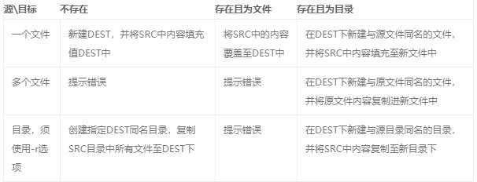
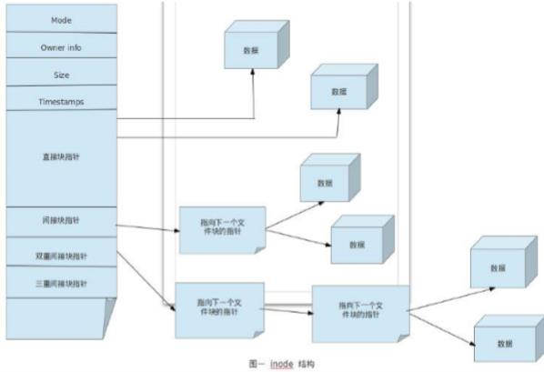

文件系统
文件和目录被组织成一个单根倒置树结构
文件系统从根目录下开始，用“/”表示
根文件系统(rootfs)：root filesystem
文件名称区分大小写
以.开头的文件为隐藏文件
路径分隔的 /
文件有两类数据：
元数据：metadata (数据的属性、inode信息)
数据：data
文件系统分层结构：LSB Linux Standard Base
FHS: (Filesystem Hierarchy Standard)
文件系统层次化标准，多数Linux版本采用这种文件组织形式，类似于Windows操作系统中c盘的文件目录，FHS采用树形结构组织文件。
FHS定义了系统中每个区域的用途、所需要的最小构成的文件和目录
文件名规则
文件名最长255个字节
包括路径在内文件名称最长4095个字节
蓝色-->目录 绿色-->可执行文件 红色-->压缩文件 浅蓝色-->链接文件 灰色-->其他文件
除了斜杠和NUL,所有字符都有效.但使用特殊字符的目录名和文件不推荐使用，有些字符需要用引号来引用它们。
注意：
Linux系统中文件名称是否区分大小写与文件系统有关，linux下文件系统有ext4，xfs，vfat等。
标准Linux文件系统（如ext4），文件名称区分大小写。例如：MAIL, Mail, mail, mAiL。但vfat文件系统则不区分大小写
文件系统结构

/boot：引导文件存放目录，内核文件(vmlinuz)、引导加载器(bootloader, grub)都存放于此目录
/bin：供所有用户使用的基本命令；不能关联至独立分区，OS启动即会用到的程序
/sbin：管理类的基本命令；不能关联至独立分区，OS启动即会用到的程序
/lib：启动时程序依赖的基本共享库文件以及内核模块文件(/lib/modules
/lib64：专用于x86_64系统上的辅助共享库文件存放位置
/etc：配置文件目录
/home/USERNAME：普通用户家目录
/root：管理员的家目录
/media：便携式移动设备挂载点
/mnt：临时文件系统挂载点
/dev：设备文件及特殊文件存储位置
b: block device，随机访问
c: character device，线性访问
/opt：第三方应用程序的安装位置
/srv：系统上运行的服务用到的数据
/tmp：临时文件存储位置
/proc: 用于输出内核与进程信息相关的虚拟文件系统
/sys：用于输出当前系统上硬件设备相关信息虚拟文件系统
/var: variable data files 可变数据的存储位置
cache: 应用程序缓存数据目录
lib: 应用程序状态信息数据
local：专用于为/usr/local下的应用程序存储可变数据；
lock: 锁文件
log: 日志目录及文件
opt: 专用于为/opt下的应用程序存储可变数据；
run: 运行中的进程相关数据,通常用于存储进程pid文件
spool: 应用程序数据池
tmp: 保存系统两次重启之间产生的临时数据
/usr: universal shared, read-only data 共享只读文件
bin: 保证系统拥有完整功能而提供的应用程序
sbin: 超级用户的一些管理程序
lib： 32位使用
lib64：只存在64位系统
include: C程序的头文件(header files)
share：结构化独立的数据，例如doc, man等
local：第三方应用程序的安装位置
bin, sbin, lib, lib64, etc, share
/misc：自动挂载光盘，该目录与autofs服务有关。
一般情况下，系统镜像在系统启动以后会挂载到/media（centos6）或/run（centos7）目录下，但在启动autofs服务之后，镜像文件也会自动挂载到该目录下，即/misc/cd目录。
linux上的应用程序的组成部分
二进制程序：/bin, /sbin, /usr/bin, /usr/sbin, /usr/local/bin, /usr/local/sbin
库文件：/lib, /lib64, /usr/lib, /usr/lib64, /usr/local/lib, /usr/local/lib64
配置文件：/etc, /etc/DIRECTORY, /usr/local/etc
帮助文件：/usr/share/man, /usr/share/doc, /usr/local/share/man, /usr/local/share/doc
文件类型
普通文件(f)：C语言元代码、SHELL脚本、二进制的可执行文件等。分为纯文本和二进制。
目录文件(d)：目录，存储文件的唯一地方。
链接文件(l)：指向同一个文件或目录的的文件。
设备文件：分为块设备(b)和字符设备(c)。
块设备文件不会显示文件大小，而是在同样的位置显示设备号,主设备号为第一列数字8，次设备号为第二列数字0-5
管道文件(p): 提供进程之间通信的一种方式
套接字(socket) 文件： 该文件类型与网络通信有关
可以通过ls –l, file, stat几个命令来查看文件的类型等相关信息
显示当前工作目录
每个shell和系统进程都有一个当前的工作目录
CWD:current work directory
显示当前shell CWD的绝对路径
pwd: printing working directory
-P 显示真实物理路径
-L 显示链接路径（默认）
绝对和相对路径
绝对路径
以正斜杠开始
完整的文件的位置路径
可用于任何想指定一个文件名的时候
相对路径名
不以斜线开始
指定相对于当前工作目录或某目录的位置
可以作为一个简短的形式指定一个文件名
基名:basename 是指路径中最后一个/后的内容
目录名:dirname 是指路径中最后一个/前的内容
更改(切换)目录
cd：change directory 改变目录
cd .：当前目录
cd或cd ~：回到当前用户家目录
cd ..：回到上一级目录即父目录
cd -：回到上一次离开的目录
与cd相关环境变量
PWD：当前目录路径
OLDPWD：上一次目录路径
"cd -"的原理：与OLDPWD变量有关，当目录切换时，会将上一次目录路径记录到OLDPWD变量，当使用cd -时，调用该变量即可
文件通配符
* 匹配零个或多个字符
？ 匹配任何单个字符
~ 当前用户家目录，如：cd ~，切换到用户家目录
~+ 当前工作目录
~- 前一个工作目录
[0-9] 匹配数字范围
[a-z] 匹配小写字母
[A-Z] 匹配大写字母
[wang] 匹配列表中（wang）任何一个字符
[^wang] 匹配列表（wang）中的所有字符以外的字符
预定义的字符类：
查看man帮助：man 7 glob
[:digit:]：任意数字，相当于0-9。
因此[:digit:]需再加[]即[[:digit:]]才相当于[0-9]，其他通配符与此类似
[:lower:]：任意小写字母
[:alnum:]：任意数字或字母
[:blank:]：水平空白字符
[:space:]：水平或垂直空白字符
[:punct:]：标点符号
[:print:]：可打印字符
[:cntrl:]：控制（非打印）字符
[:graph:]：图形字符
[:xdigit:]：十六进制字符
管理命令
cd
cd .. 切换至上级目录
cd 切换至当前用户主目录
cd - 切换至以前的工作目录
-P 物理真实路径
当前路径和上一个路径保存在这两个变量中
[root@Web ~]# echo $PWD
[root@Web ~]# echo $OLDPWD
/home/han
/root返回到其他用户的主目录
[root@Web ~]# cd ~han
ls
用法： ls [options] [files_or_dirs]
list 列出文件夹中的内容 文件 文件夹
-a 列出目录中全部文件和目录 包括隐藏文件
-l 长格式显示
-R 递归显示
-d 只显示目录本身一些属性
–S 按从大到小排序
–t 按mtime排序
–u 配合-t选项，显示并按atime从新到旧排序
–U 按目录存放顺序显示
–X 按文件后缀排序
-r 逆序排序输出
mkdir
-p, --parents 需要时创建目标目录的上层目录，
-v, --verbose 每次创建新目录都显示信息
rmdir
只能删除空文件夹
-p, --parents 删除指定目录及其上级文件夹
-v, --verbose 输出处理的目录详情
-m MODE: 创建目录时直接指定权限
tree
-d: 只显示目录
-L level：指定显示的层级数目
-P pattern: 只显示由指定pattern匹配到的路径
stat
查看文件状态
三个时间戳：
atime：Access time，访问时间，读取文件内容
mtime：Modify time，修改时间，改变文件内容
ctime：Change time，改变时间，元数据发生改变
数据分为两部分：元数据（metadata），数据（data）
元数据是指数据本身所包含的属性信息，如：大小、权限、存储位置、历史记录、所有者等
数据是指数据内容
touch
当文件不存在时，创建新文件；当文件存在时，刷新该文件的访问时间
-a 仅改变 atime和ctime
-m 仅改变 mtime和ctime
-t [[CC]YY]MMDDhhmm[.ss] 指定atime和mtime的时间戳
-c 如果文件不存在，则不予创建
touch -- -a == touch /data/-a touch ~a
rm
删除
-i 交互式
-f 强制删除
-r 递归
rm -- -a == rm ./-a
mv
移动和重命名文件
-i: 交互式
-f: 强制
-b: 目标存在，覆盖前先备份
file
文件可以包含多种类型的数据
检查文件的类型，然后确定适当的打开命令或应用程序使用
语法：file [options] ...
-b 列出文件辨识结果时，不显示文件名称
-f filelist 列出文件filelist中文件名的文件类型
-F 使用指定分隔符号替换输出文件名后默认的”:”分隔符
-L 查看对应软链接对应文件的文件类型
mktemp
创建临时文件或目录
mktemp [option] fileXXX
生成随机字符文件，随机X最少个数为3个
-d: 创建临时目录
-p DIR或--tmpdir=DIR：指明临时文件所存放目录位置
install
安装复制文件
install [option] src dest
[option]
-m 权限
-o 所有者
-g 所有组
-d 目录
示例：
install -m 600 -osss -gaaa /etc/fstab /tmp/file
结果：
1. 复制/etc/fstab到/tmp/并改名为file
2. 把该文件的权限改为600
3. 把该文件的所有者改为sss，所属组改为aaa
cp
cp SRC DEST
SRC是文件：
如果目标不存在：新建DEST，并将SRC中内容填充至DEST中
如果目标存在：
如果DEST是文件：将SRC中的内容覆盖至DEST中
基于安全，建议为cp命令使用-i选项
如果DEST是目录：在DEST下新建与原文件同名的文件，并将SRC中内容填充至新文件中
cp SRC... DEST
SRC...：多个文件
DEST必须存在，且为目录，其它情形均会出错；
cp SRC DEST
SRC是目录：此时使用选项：-r
如果DEST不存在：则创建指定目录，复制SRC目录中所有文件至DEST中；
如果DEST存在：
如果DEST是文件：报错
如果DEST是目录：

-a：复制文件所有属性，相当于-dR --preserv=all
-d：--no-dereference --preserv=links 不复制原文件，只复制链接名，该命令针对链接文件。
-i：覆盖前提示 -n：不覆盖，注意两者顺序
-r，-R：递归复制目录及内部的所有内容，针对于目录中存在目录或文件。
-p --preserv[=ATTR_LIST] 复制文件时，指定复制的属性（权限）
mode: 权限
ownership: 属主属组
timestamp:
links
xattr
context
all
-v：--verbose复制时显示详细过程
-f：--force，强行复制文件或目录，不论目标文件或目录是否已存在
-u：只复制发生变化的文件，文件更新时使用
-s：对源文件建立符号连接，而非复制文件
-l：对源文件建立硬连接，而非复制文件
--backup=numbered 目标存在，覆盖前先备份，并且本分文件加数字后缀
示例：
1、rename 批量更改文件
touch f{1..10}.txt
rename 'txt' 'txt.bak' *.txt 把txt后缀批量修改为txt.bak
rename '.bak' '' *.bak 把.bak后缀删除
2、如何立即删除大文件。
当删除一个文件bigfile时，该文件正在被访问，使用rm删除该文件后，该文件占用的空间不会被立即释放，需要等待一段时间后才会释放空间。
解决方法：> bigfile 将bigfile文件内容清0
rm -f bigfile 再rm删除big文件
3.给屏幕录像：
开始：script -t 2> time.log -a cmd.session
结束：exit
播放：scriptreplay time.log cmd.session
超级块(Superblock)
1.整个文件系统的第一块空间。包括整个文件系统的基本信息
2.块大小，inode/block的总量、使用量、剩余量，指向空间inode和数据块的指针等相关信息
3.一个文件系统由一个超级块、inode和数据区域块组成。Inode包含文件的属性(如读写属性、owner等，以及指向数据块的指针)，数据区域块则是文件内容。
当查看某个文件时，会先从inode table中查出文件属性及数据存放点，再从数据块中读取数据
索引节点
inode（index node）表中包含文件系统所有文件列表，文件系统索引,记录文件的属性
1.它是文件系统的最基本单元，是文件系统连接任何子目录、任何文件的桥梁。每个子目录和文件只有唯一的一个 inode 块。
2.它包含了文件系统中文件的基本属性(文件的长度、创建及修改时间、权限、所属关系)、存放数据的位置等相关信息.,一般是128字节或256字节
3.硬连接和源文件具有相同的 inode
4.mv或rename文件，只是改变文件名，不影响inode号码
5.更后文件同样的文件名，生成新的inode，下次运行，文件名就自动指向新文件，旧文件的inode被回收

inode表运行原理：
inode表中存储内容：元数据、直接指针（ext系统结构有12个直接指针）、间接指针（双重间接指针、三重间接指针）
inode表中的直接指针和间接指针指向数据块，每个直接指针指向一个数据块，每个数据块大小4K，那么直接指针能够寻找的数据块大小只有48K。
当继续存储数据时，48K空间被占用完后，若想要继续存储数据，就需要使用到双重间接块指针，间接指针指向一个数据块，该数据块是一个指针块，不存储数据，被分割成若干小块，每个小块大小4个字节（byte），那么共有1024个小块。每个小块又将指针指向磁盘中存储数据的数据块，那么该数据块能够存储的数据大小为4k*1024=4M。
当4M空间被占用完以后，若想要再存储数据，就要使用三重间接块指针，按照以上运行原理，可存储数据空间为4T。
如何访问目录、文件：
首先，查询目录、文件的节点编号
然后根据节点编号找到inode表中对应的inode信息，
最后，根据inode信息找到指针指向的数据块（block），该数据块指向存放该文件的磁盘路径。
ls -i 查看inode节点编号
不同分区的节点编号一样
不同分区节点编号即使一致，也不是同一个文件
同一个分区中，节点编号一致，就是同一个文件
提示no space left on device，可能节点编号inode被用完
cp、rm、mv和inode
cp命令：
分配一个空闲的inode号，在inode表中生成新条目
在目录中创建一个目录项，将名称与inode编号关联
拷贝数据生成新的文件
rm 命令：
目录链接数递减，从而释放的inode号可以被重用
把数据块放在空闲列表中
删除目录项
数据实际上不会马上被删除，但当另一个文件使用数据块时将被覆盖。
mv命令
mv命令的目标和源在相同的文件系统
用新的文件名创建对应新的目录项
删除旧目录条目对应的旧的文件名
不影响inode表（除时间戳）或磁盘上的数据位置：没有数据被移动！
如果目标和源在一个不同的文件系统， mv相当于cp和rm
软和硬链接
硬连接：
原文件名和连接文件名都指向相同的物理地址。
1)目录不能有硬连接；
2)硬连接不能跨越文件系统（不能跨越不同的分区）
3)不能对不存在的文件创建硬链接
4)文件在磁盘中只有一个拷贝，节省硬盘空间
5)创建硬链接会增加额外的记录项以引用文件
6)创建时链接数递增
7)删除文件时：
rm命令递减计数的链接
文件要存在，至少有一个链接数
当链接数为零时，该文件被删除
8)新旧文件的inode编号一致
由于删除文件要在同一个索引节点属于唯一的连接时才能成功，因此可以防止不必要的误删除。
软连接：
用ln -s命令建立文件的符号连接作为一个文件，它的数据是它所连接的文件的路径名。
类似windows下的快捷方式。
1)可以对目录创建，遍历操作会忽略目录的软连接
2)原始文件一般路径用相对路径，相对路径一定相对于软链接文件的路径
3)新旧文件的inode编号不一致
4)可以对不存在文件创建
5)可以跨文件系统
6)指向的是另一个文件的路径；
7)其大小为指向的路径字符串的长度
8)不增加或减少目标文件
可以删除原有的文件而保存连接文件，没有防止误删除功能。
取消软链接： unlink file
注意：任何目录"硬链接"总数等于2加上它的子目录总数（含隐藏目录）,2是父目录对其的“硬链接”和当前目录下的".硬链接”
区别
硬链接和软链接的区别
1 同一个文件？
硬链接指的是同一个文件，是给文件起了一个新名，节点编号一致;
软链接不是同一个文件，是给文件增加一个快捷方式，节点编号不一致。
2 跨分区？
硬链接不可以，软链接可以
3 链接数增长？
硬链接，链接数+1；软链接，链接数不变
4 inode Number 是否相同？
硬链接相同，软链接不同
5 原始文件删除，链接文件可否访问？
硬链接和原始文件之间的关系是平等关系，硬链接被删除，只要不是删除的最后一个硬链接，源文件不受影响，只是链接数-1
软链接是依赖源文件而存在的，源文件被删除，软链接不可用
6 大小？
软链接为指向的路径字符串的长度，硬链接为源文件大小
7 支持目录？
软链接可以创建目录的软链接；硬链接不能